Bài 4 — Mạng máy tính
Những gì được vận chuyển trên mạng lưới đó?
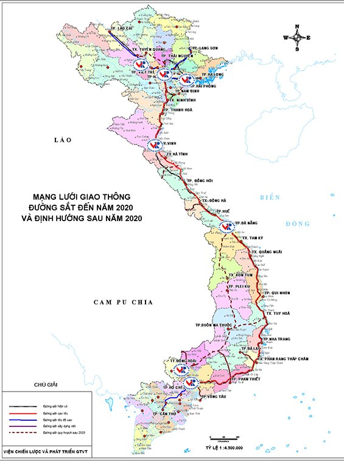
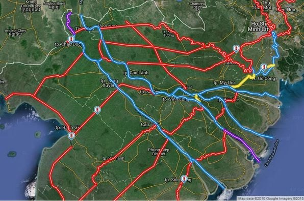
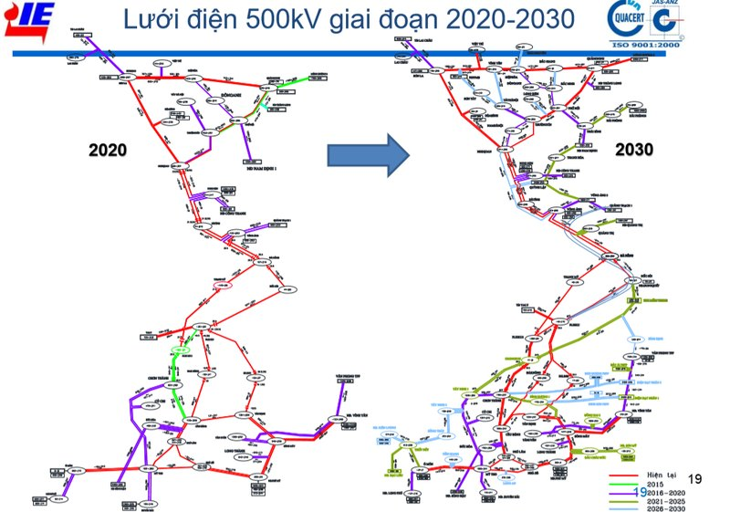
Còn nữa: mạng đường sắt 🚆 · mạng ống nước 🚰 · mạng điện thoại 📞 …
Điểm chung của những mạng lưới đó là gì? (có thể chọn nhiều đáp án)
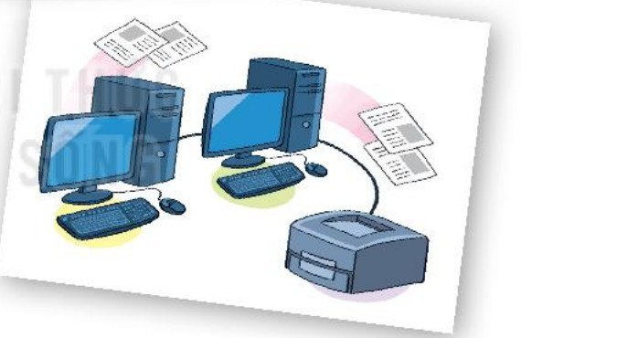
A computer network = two or more computers and devices connected to exchange information.
Hai hay nhiều máy tính và các thiết bị được kết nối để truyền thông tin cho nhau tạo thành một mạng máy tính.Where do you see computer networks at school and at home?
Em hãy thảo luận với bạn về lợi ích của mạng máy tính ở trường, ở nhà em.
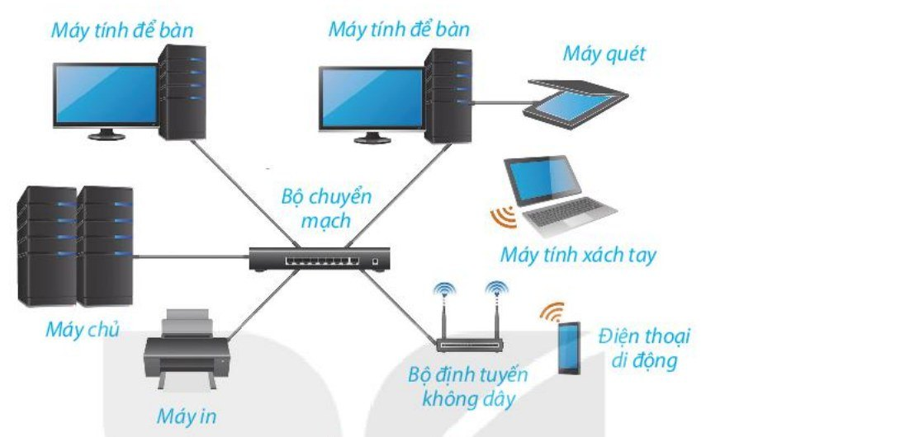
① Which devices are connected?
Những thiết bị nào đang được nối vào mạng?→ máy tính để bàn, máy chủ, máy in, máy quét, máy tính xách tay, điện thoại
② Through which middle devices?
Chúng nối với nhau qua thiết bị trung gian nào?→ dây cáp, bộ chuyển mạch, bộ định tuyến không dây (sóng)
| Traffic 🚦Mạng giao thông | Computer network 💻Mạng máy tính |
|---|---|
| 🏠 Start / end pointsĐiểm xuất phát, đích đến | 1. End devices · Thiết bị đầu cuốimáy tính, điện thoại thông minh, máy in, máy quét, máy ảnh… |
| 🛣️ Roads, stations, airportsCon đường, nhà ga, sân bay | 2. Connecting devices · Thiết bị kết nốiđường truyền (có dây, không dây), bộ chia (Hub), bộ chuyển mạch (Switch), bộ định tuyến (Router), điểm truy cập không dây (Access Point)… |
| 🚥 Traffic rulesLuật lệ giao thông | 3. Network software · Phần mềm mạngứng dụng truyền thông + phần mềm điều khiển quá trình truyền dữ liệu |
Thiết bị đầu cuối hay thiết bị kết nối? Giơ tay 🖐 = đầu cuối · Khoanh tay 🙅 = kết nối
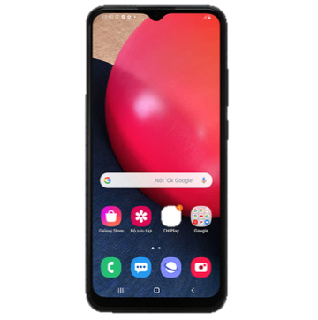
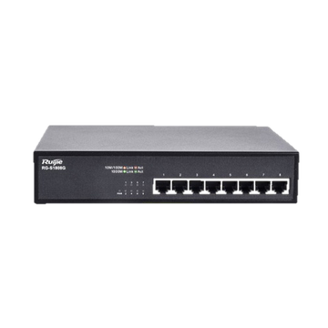
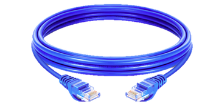
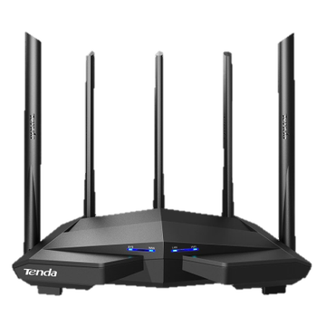
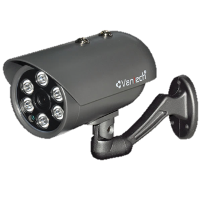
Em hãy nêu ví dụ cho thấy kết nối không dây thuận tiện hơn kết nối có dây.
Máy tính kết nối với nhau để:
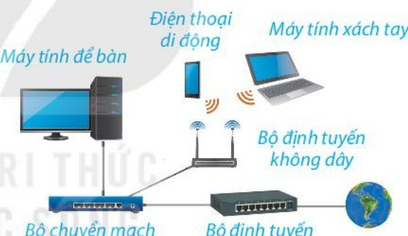
Which devices in Hình 2.2 use a wireless connection?
Thiết bị có kết nối không dây ở Hình 2.2 là:✅ B, C, D — nhìn biểu tượng sóng 📶 trong hình.
Dad's phone, Mom's phone and a laptop use the Internet at An's home. Is that a network?
Nhà An: điện thoại của bố, của mẹ và máy tính xách tay cùng truy cập Internet. Đó có phải một mạng máy tính không?
Phòng thư viện có 5 máy tính. Hình 2.3 là một cách nối. Em hãy vẽ thêm hai cách khác.